Module 12 Public Policy
Public Policy in Texas
Introduction: Public Policy in Texas
Learning Objective
By the end of this chapter, you will be able to:
- Discuss important public policy issues in Texas
Introduction
Public policy is the broad strategy government uses to do its job, the relatively stable set of purposive governmental behaviors that address matters of concern to some part of society. Most policy outcomes are the result of considerable debate, compromise, and refinement that happen over years and are finalized only after input from multiple institutions within government. Health care reform, for instance, was developed after years of analysis, reflection on existing policy, and even trial implementation at the state level.
Simply put, public policy is anything the government does to achieve a particular outcome. More will be said about this in the next section; however, it is important for you to understand that public policy decisions impact our lives in many ways. As a result, we should understand how policies are formed, budgeted, implemented, and evaluated. We should also know who the policymakers are and be able to measure the effectiveness of policies that have been made.
This chapter explores public policy-making in Texas across a variety of leading issue areas, including public education, social welfare, Medicaid, immigration, energy, and the environment.
Licensing and Attribution
CC LICENSED CONTENT, ORIGINAL
Revision and Adaptation. Authored by: Kris S. Seago. License: CC BY: Attribution
Revision and Adaptation. Authored by: panOpen. License: CC BY: Attribution
What is Public Policy?
Learning Objective
By the end of this section, you will be able to:
- Discuss the underlying controversies in making public policy
Introduction
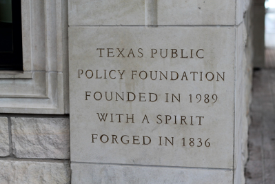
Figure 11.1 The Texas Public Policy Foundation in Austin, Texas. The Texas Public Policy Foundation is a 501(c)3 non-profit research institute that was created to “promote and defend liberty, personal responsibility, and free enterprise in Texas and the nation by educating and affecting policymakers and the Texas public policy debate with academically sound research and outreach.” Image credit: Robyn License: CC BY
It is easy to imagine that when designers engineer a product, like a car, they do so with the intent of satisfying the consumer. But the design of any complicated product must take into account the needs of regulators, transporters, assembly line workers, parts suppliers, and myriad other participants in the manufacture and shipment process. And manufacturers must also be aware that consumer tastes are fickle: A gas-guzzling sports car may appeal to an unmarried twenty- something with no children; but what happens to product satisfaction when gas prices fluctuate, or the individual gets married and has children?
In many ways, the process of designing policy isn’t that much different. The government, just like auto companies, needs to ensure that its citizen-consumers have access to an array of goods and services. And just as in auto companies, a wide range of actors is engaged in figuring out how to do it. Sometimes, this process effectively provides policies that benefit citizens. But just as often, the process of policymaking is muddied by the demands of competing interests with different opinions about society’s needs or the role that government should play in meeting them. To understand why, we begin by thinking about what we mean by the term “public policy.”
Public Policy Defined
One approach to thinking about public policy is to see it as the broad strategy the government uses to do its job. More formally, it is the relatively stable set of purposive governmental actions that address matters of concern to some part of society. This description is useful in that it helps to explain both what public policy is and what it isn’t. First, public policy is a guide to legislative action that is more or less fixed for long periods of time, not just short-term fixes or single legislative acts. Policy also doesn’t happen by accident, and it is rarely formed simply as the result of the campaign promises of a single elected official, even the governor.
Public policy can be complicated and controversial; deciding what works best and how to allocate resources to achieve a policy goal can involve multiple trade- offs. While elected officials are often important in shaping policy, most policy outcomes are the result of considerable debate, compromise, and refinement that happen over years and are finalized only after input from multiple institutions within government as well as from interest groups and the public.
Consider the example of government health care expansion. A follower of politics in the news media may come away thinking the reforms implemented in 2010 were as sudden as they were sweeping, having been developed in the final weeks before they were enacted. The reality is that expanding health care access by the government had actually been a priority of the Democratic Party for several decades. What may have seemed like a policy developed over a period of months was in fact formed after years of analysis, reflection upon existing policy, and even trial implementation of similar types of programs at the state level.
Remember that the policies of the federal government often have a direct consequence for Texas. Texas led other states in an effort to combat the federal government’s efforts to take over the healthcare industry by the Obama administration’s program. Even before passage of the Affordable Care Act (ACA; 2010), which expanded health care coverage to millions and of the Health Care and Education Reconciliation Act (HCERA; 2010), more than 50 percent of all healthcare expenditures in the United States already came from federal government programs such as Medicare and Medicaid.
Several House and Senate members from both parties along with First Lady Hillary Clinton had proposed significant expansions in federal health care policy during the Democratic administration of Bill Clinton, providing a number of different options for any eventual health care overhaul. Much of what became the ACA was drawn from proposals originally developed at the state level, by none other than Obama’s 2012 Republican presidential opponent Mitt Romney when he was governor of Massachusetts.
This story illustrates an important aspect of policy, Republicans are not all the same. Republicans in Texas tend to be more conservative than Republicans in other parts of the country. This simply means that policy differences or preferences can occur within a political party. Likewise, Democrats in Texas tend to be more conservative than other parts of the country.
In addition to being thoughtful and generally stable, public policy deals with issues of concern to some large segment of society, as opposed to matters of interest only to individuals or a small group of people. Governments frequently interact with individual actors like citizens, corporations, or other countries. They may even pass highly specialized pieces of legislation, known as private bills, which confer specific privileges on individual entities. But public policy covers only those issues that are of interest to larger segments of society or that directly or indirectly affect society as a whole. Paying off the loans of a specific individual would not be public policy, but creating a process for loan forgiveness available to certain types of borrowers (such as those who provide a public service by becoming teachers) would certainly rise to the level of public policy.
A final important characteristic of public policy is that it is more than just the actions of government; it also includes the behaviors or outcomes that government action creates. Policy can even be made when government refuses to act in ways that would change the status quo when circumstances or public opinion begin to shift. For example, much of the debate over gun control policy
in the United States has centered on the unwillingness of Congress to act, even in the face of public opinion that supports some changes to gun control policy. In fact, one of the last major changes occurred in 2004, when lawmakers’ inaction resulted in the expiration of a piece of legislation known as the Federal Assault Weapons Ban (1994). Of course, this is relevant to Texas given the culture for freedom and self defense.
Public Policy as Outcomes
Governments rarely want to keep their policies a secret. Elected officials want to be able to take credit for the things they have done to help their constituents, and their opponents are all too willing to cast blame when policy initiatives fail. We can therefore think of policy as the formal expression of what elected or appointed officials are trying to accomplish. In passing the HCERA (2010), Congress declared its policy through an act that directed how it would appropriate money. The president can also implement or change policy through an executive order, which offers instructions about how to implement law under his or her discretion. Finally, policy changes can come as a result of court actions or opinions, such as Brown v. Board of Education of Topeka (1954), which formally ended school segregation in the United States.
Typically, elected and even high-ranking appointed officials lack either the specific expertise or tools needed to successfully create and implement public policy on their own. They turn instead to the vast government bureaucracy to provide policy guidance. For example, when Congress passed the Clean Water Act (1972), it dictated that steps should be taken to improve water quality throughout the country. But it ultimately left it to the bureaucracy to figure out exactly how ‘clean’ water needed to be. In doing so, Congress provided the Environmental Protection Agency (EPA) with discretion to determine how much pollution is allowed in U.S. waterways.
There is one more way of thinking about policy outcomes: in terms of winners and losers. Almost by definition, public policy promotes certain types of behavior while punishing others. So, the individuals or corporations that a policy favors are most likely to benefit, or win, whereas those the policy ignores or punishes are likely to lose. Even the best-intended policies can have unintended consequences and may even ultimately harm someone, if only those who must pay for the policy through higher taxes.
For example, a policy designed to encourage students to go to liberal arts colleges may cause trade school enrollment to decline. Strategies to promote diversity in higher education may make it more difficult for qualified white or male applicants to get accepted into competitive programs. Efforts to clean up drinking water supplies may make companies less competitive and cost employees their livelihood. Even something that seems to help everyone, such as promoting charitable giving through tax incentives, runs the risk of lowering tax revenues from the rich (who contribute a greater share of their income to charity) and shifting tax burdens to the poor (who must spend a higher share of their income to achieve a desired standard of living). And while policy pronouncements and bureaucratic actions are certainly meant to rationalize policy, it is whether a given policy helps or hurts constituents (or is perceived to do so) that ultimately determines how voters will react toward the government in future elections.
Finding a Middle Ground: The Social Safety Net
During the Great Depression of the 1930s, the United States created a set of policies and programs that constituted a social safety net for the millions who had lost their jobs, their homes, and their savings (Figure 11.2). Under President Franklin Delano Roosevelt, the federal government began programs like the Work Progress Administration and Civilian Conservation Corps to combat unemployment and the Home Owners’ Loan Corporation to refinance Depression-related mortgage debts. The Texas Department of Public Welfare was established in 1939 during the New Deal. As the effects of the Depression eased, the government phased out many of these programs. Other programs, like Social Security or the minimum wage, remain a part of the way the federal government redistributes wealth among members of its population. The federal government has also added further social support programs, like Medicaid, Medicare, and the Special Supplemental Nutrition Program for Women, Infants, and Children, to ensure a baseline or minimal standard of living for all, even in the direst of times.
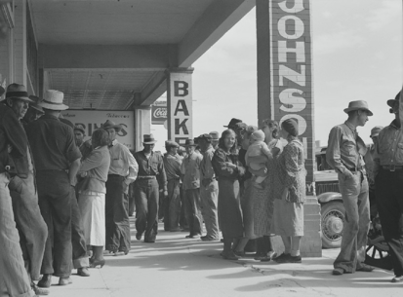
Figure 11.2 In 1937, during the Great Depression, families in Calipatria, California, waited in line for relief checks, part of the federal government’s newly introduced social safety net. Image credit: modification of work by the Library of Congress.
In recent decades, however, some have criticized these safety net programs for inefficiency and for incentivizing welfare dependence. They deride “government leeches” who use food stamps to buy lobster or other seemingly inappropriate items. Critics deeply resent the use of taxpayer money to relieve social problems like unemployment and poverty; workers who may themselves be struggling to put food on the table or pay the mortgage feel their hard-earned money should not support other families. “If I can get by without government support,” the reasoning goes, “those welfare families can do the same. Their poverty is not my problem.”
As for Texas, roughly 14 percent of Texas residents received Social Security benefits as of December 2016, according to the Social Security Administration. That translates to approximately 4 million people in Texas who received Social Security disbursements related to retirement, survivors, or disability benefits. About 2.9 million people in Texas were receiving retirement benefits. Of Texas’ estimated 3.4 million people aged 65 or older, about 87 percent received Social Security benefits, which is lower than this figure for the United States as a whole (which is roughly 90 percent). Benefits in Texas totaled roughly $4.85 billion for the month of December 2016, per the Social Security Administration. That works out to an average benefit of $1,206 for that month.
So where should the government draw the line? While there have been some instances of welfare fraud, the welfare reforms of the 1990s have made long-term dependence on the federal government less likely as the welfare safety net was pushed to the states. And with the income gap between the richest and the poorest at its highest level in history, this topic is likely to continue to receive much discussion in the coming years.
Question: Where is the middle ground in the public policy argument over the social safety net? How can the Texas government protect its most vulnerable citizens without placing an undue burden on others?
Categorizing Public Policy
The idea of public policy is by its very nature a politically contentious one. Among the differences between American liberals and conservatives are the policy preferences prevalent in each group. Modern liberals tend to feel very comfortable with the idea of the government shepherding progressive social and economic reforms, believing that these will lead to outcomes more equitable and fair for all members of society. Conservatives, on the other hand, often find government involvement onerous and overreaching. They feel society would function more efficiently if oversight of most “public” matters were returned to the private sphere. Before digging too deeply into a discussion of the nature of public policy, let us look first at why so many aspects of society come under the umbrella of public policy to begin with.
Different Types of Goods
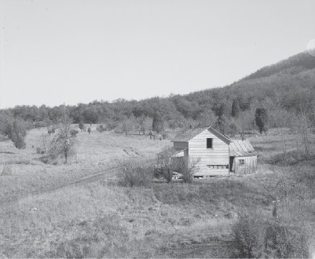
Figure 11.3 This Library of Congress photo shows an early nineteenth- century subsistence farm in West Virginia, which once included crops, livestock, and an orchard. (credit: modification of work by the Library of Congress)
Think for a minute about what it takes to make people happy and satisfied. As we live our daily lives, we experience a range of physical, psychological, and social needs that must be met in order for us to be happy and productive. At the very least, we require food, water, and shelter. In very basic subsistence societies, people acquire these through farming crops, digging wells, and creating shelter from local materials. People also need social interaction with others and the ability to secure goods they acquire, lest someone else try to take them. As their tastes become more complex, they may find it advantageous to exchange their items for others; this requires not only a mechanism for barter but also a system of transportation. The more complex these systems are, the greater the range of items people can access to keep them alive and make them happy. However, this increase in possessions also creates a stronger need to secure what they have acquired.
Economists use the term goods to describe the range of commodities, services, and systems that help us satisfy our wants or needs. This term can certainly apply to the food you eat or the home you live in, but it can also describe the systems of transportation or public safety used to protect them. Most of the goods you interact with in your daily life are private goods, which means that they can be owned by a particular person or group of people, and are excluded from use by others, typically by means of a price. For example, your home or apartment is a private good reserved for your own use because you pay rent or make mortgage payments for the right to live there. Further, private goods are finite and can run out if overused, even if only in the short term. The fact that private goods are excludable and finite makes them tradable. A farmer who grows corn, for instance, owns that corn, and since only a finite amount of corn exists, others may want to trade their goods for it if their own food supplies begin to dwindle.
Proponents of free-market economics believe that the market forces of supply and demand, working minimal government involvement, are the most effective way for markets to operate. The primary purpose of the government in this system is secure property rights. One of the basic principles of free-market economics is that for just about any good that can be privatized, the most efficient means for exchange is the marketplace. A well-functioning market will allow producers of goods to come together with consumers of goods to negotiate a trade. People facilitate trade by creating a currency—a common unit of exchange—so they do not need to carry around everything they may want to trade at all times. As long as there are several providers or sellers of the same good, consumers can negotiate with them to find a price they are willing to pay. As long as there are several buyers for a seller’s goods, providers can negotiate with them to find a price buyers are willing to accept. And, the logic goes, if prices begin to rise too much, other sellers will enter the marketplace, offering lower prices.
A second basic principle of free-market economics is that it is largely unnecessary for the government to protect the value of private goods. Farmers who own land used for growing food have a vested interest in protecting their land to ensure its continued production. Business owners must protect the reputation of their business or no one will buy from them. And, to the degree that producers need to ensure the quality of their product or industry, they can accomplish that by creating a group or association that operates outside government control. In short, industries have an interest in self-regulating to protect their own value. According to free-market economics, as long as everything we could ever want or need is a private good, and so long as every member of society has some ability to provide for themselves and their families, public policy regulating the exchange of goods and services is really unnecessary.
Some people in the United States argue that the self-monitoring and self- regulating incentives provided by the existence of private goods mean that sound public policy requires very little government action. Known as libertarians, these individuals believe government almost always operates less efficiently than the private sector (the segment of the economy run for profit and not under government control), and that government actions should therefore be kept to a minimum.
Even as many in the United States recognize the benefits provided by private goods, we have increasingly come to recognize problems with the idea that all social problems can be solved by exclusively private ownership. First, not all goods can be classified as strictly private. Can you really consider the air you breathe to be private? Air is a difficult good to privatize because it is not excludable—everyone can get access to it at all times—and no matter how much of it you breathe, there is still plenty to go around. Geographic regions like forests have environmental, social, recreational, and aesthetic value that cannot easily be reserved for private ownership. Resources like migrating birds or schools of fish may have value if hunted or fished, but they cannot be owned due to their migratory nature. Finally, national security provided by the armed forces protects all citizens and cannot reasonably be reserved for only a few.
These are all examples of what economists call public goods, sometimes referred to as collective goods. Unlike private property, they are not excludable and are essentially infinite. Forests, water, and fisheries, however, are a type of public good called common goods, which are not excludable but may be finite. The problem with both public and common goods is that since no one owns them, no one has a financial interest in protecting their long-term or future value. Without government regulation, a factory owner can feel free to pollute the air or water, since he or she will have no responsibility for the pollution once the winds or waves carry it somewhere else (see Figure 11.4). Without government regulation, someone can hunt all the migratory birds or deplete a fishery by taking all the fish, eliminating future breeding stocks that would maintain the population. The situation in which individuals exhaust a common resource by acting in their own immediate self-interest is called the tragedy of the commons.
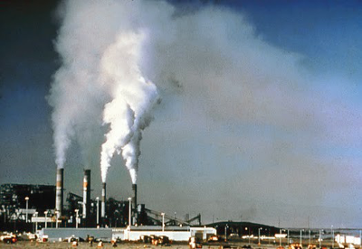
Figure 11.4 Air pollution billows from a power plant before the installation of emission control equipment for the removal of sulfur dioxide and particulate matter. Can you see why uncontrolled pollution is an example of the “tragedy of the commons”?
A second problem with strict adherence to free-market economics is that some goods are too large, or too expensive, for individuals to provide them for themselves. Consider the need for a marketplace: Where does the marketplace come from? How do we get the goods to market? Who provides the roads and bridges? Who patrols the waterways? Who provides security? Who ensures the regulation of the currency? No individual buyer or seller could accomplish this. The very nature of the exchange of private goods requires a system that has some of the openness of public or common goods, but is maintained by either groups of individuals or entire societies.
Economists consider goods like cable TV, cellphone service, and private schools to be toll goods. Toll goods are similar to public goods in that they are open to all and theoretically infinite if maintained, but they are paid for or provided by some outside (nongovernment) entity. Many people can make use of them, but only if they can pay the price. The name “toll goods” comes from the fact that, early on, many toll roads were in fact privately owned commodities. Even today, states from Virginia to California have allowed private companies to build public roads in exchange for the right to profit by charging tolls.
So long as land was plentiful, and most people in the United States lived a largely rural subsistence lifestyle, the difference between private, public, common, and toll goods was mostly academic. But as public lands increasingly became private through sale and settlement, and as industrialization and the rise of mass production allowed monopolies and oligopolies to become more influential, support for public policies regulating private entities grew. By the beginning of the twentieth century, led by the Progressives, the United States had begun to search for ways to govern large businesses that had managed to distort market forces by monopolizing the supply of goods. And, largely as a result of the Great Depression, people wanted ways of developing and protecting public goods that were fairer and more equitable than had existed before.
These forces and events led to the increased regulation of public and common goods, and a move for the public sector—the government—to take over of the provision of many toll goods.
Classic Types of Policy
Public policy, then, ultimately boils down to determining the distribution, allocation, and enjoyment of public, common, and toll goods within a society. While the specifics of policy often depend on the circumstances, two broad questions all policymakers must consider are a) who pays the costs of creating and maintaining the goods, and b) who receives the benefits of the goods? When private goods are bought and sold in a market place, the costs and benefits go to the participants in the transaction. Your landlord benefits from receipt of the rent you pay, and you benefit by having a place to live. But non-private goods like roads, waterways, and national parks are controlled and regulated by someone other than the owners, allowing policymakers to make decisions about who pays and who benefits.
In 1964, Theodore Lowi argued that it was possible to categorize policy based upon the degree to which costs and benefits were concentrated on the few or diffused across the many. One policy category, known as distributive policy, tends to collect payments or resources from many but concentrates direct benefits on relatively few. Highways are often developed through distributive policy. Distributive policy is also common when society feels there is a social benefit to individuals obtaining private goods such as higher education that offer long-term benefits, but the upfront cost may be too high for the average citizen. One example of the way distributive policy works is the story of the Transcontinental Railroad. In the 1860s, the U.S. government began to recognize the value of building a robust railroad system to move passengers and freight around the country. A particular goal was connecting California and the other western territories acquired during the 1840s war with Mexico to the rest of the country. The problem was that constructing a nationwide railroad system was a costly and risky proposition. To build and support continuous rail lines, private investors would need to gain access to tens of thousands of miles of land, some of which might be owned by private citizens. The solution was to charter two private corporations—the Central Pacific and Union Pacific Railroads—and provide them with resources and land grants to facilitate the construction of the railroads (see Figure 11.5).Through these grants, publicly owned land was distributed to private citizens, who could then use it for their own gain. However, a broader public gain was simultaneously being provided in the form of a nationwide transportation network.
Texas continues to have more railroad mileage than any other state and the largest number of railroad employees. In 1992 chemicals accounted for thirty percent of the railroad tonnage originating in the state, while agricultural products, the leading category during the early years, accounted for only seven percent. Coal represented the largest category of rail tonnage terminating in Texas. The state is second only to Virginia with its extensive coal shipping piers in the amount of coal terminated. https://tshaonline.org/handbook/online/articles/eqr01.
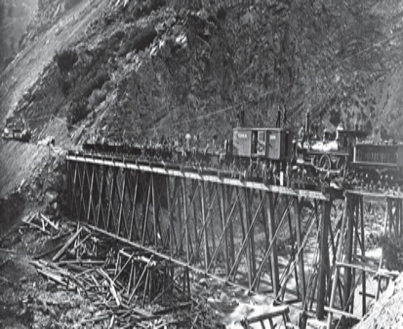
Figure 11.5 In an example of distributive policy, the Union Pacific Railroad was given land and resources to help build a national railroad system. Here, its workers construct the Devil’s Gate Bridge in Utah in 1869
A quote from Sam Houston in 1858 on the importance of transportation
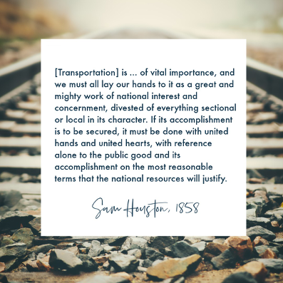
Figure 11.6 Transportation often comes about through distributive policy. Image credit: Jean Downs License: CC BY
The same process operates in the agricultural sector, where various federal programs help farmers and food producers through price supports and crop insurance, among other forms of assistance. These programs help individual farmers and agriculture companies stay afloat and realize consistent profits. They also achieve the broader goal of providing plenty of sustenance for the people of the United States, so that few of us have to “live off the land.”
Other examples of distributive policy support citizens’ efforts to achieve “the American Dream.” American society recognizes the benefits of having citizens who are financially invested in the country’s future. Among the best ways to encourage this investment are to ensure that citizens are highly educated and have the ability to acquire high-cost private goods such as homes and businesses. However, very few people have the savings necessary to pay upfront for a college education, a first home purchase, or the start-up costs of a business. To help out, the government has created a range of incentives that everyone in the country pays for through taxes but that directly benefit only the recipients. Examples include grants (such as Pell grants), tax credits and deductions, and subsidized or federally guaranteed loans. Each of these programs aims to achieve a policy outcome. Pell grants exist to help students graduate from college, whereas Federal Housing Administration mortgage loans lead to home ownership.
While distributive policy, according to Lowi, has diffuse costs and concentrated benefits, regulatory policy features the opposite arrangement, with concentrated costs and diffuse benefits. A relatively small number of groups or individuals bear the costs of regulatory policy, but its benefits are expected to be distributed broadly across society. As you might imagine, regulatory policy is most effective for controlling or protecting public or common resources. Among the best-known examples are policies designed to protect public health and safety, and the environment. These regulatory policies prevent manufacturers or businesses from maximizing their profits by excessively polluting the air or water, selling products they know to be harmful, or compromising the health of their employees during production.
A final type of policy is redistributive policy, so named because it redistributes resources in society from one group to another. That is, according to Lowi, the costs are concentrated and so are the benefits, but different groups bear the costs and enjoy the benefits. Most redistributive policies are intended to have a sort of “Robin Hood” effect; their goal is to transfer income and wealth from one group to another such that everyone enjoys at least a minimal standard of living. Typically, the wealthy and middle class pay into the federal tax base, which then funds need-based programs that support low-income individuals and families.
A few examples of redistributive policies are Head Start (education), Medicaid (health care), Temporary Assistance for Needy Families (TANF, income support), and food programs like the Supplementary Nutritional Aid Program (SNAP). The government also uses redistribution to incentivize specific behaviors or aid small groups of people. Pell grants to encourage college attendance and tax credits to encourage home ownership are other examples of redistribution.
Link to Learning
The Public Policy Project on Ballotpedia aims to illuminate major policy issues being discussed and implemented throughout the United States. Public policy can be complicated and controversial; deciding what works best and how to allocate resources to achieve a policy goal can involve multiple trade-offs. Much of the public policy that affects citizens economically, legally and socially, is made at the state level.
Explore links and introductions to public policy in Texas to Texas public policy articles on Ballotpedia.
References and Further Reading
Texas Public Policy Foundation. Accessed September 10, 2019.
James E. Anderson. 2000. Public Policymaking: An Introduction, 4th ed. Boston: Houghton Mifflin.
Kaiser Family Foundation (2009). National Health Insurance—A Brief History of Reform Efforts in the U.S. Accessed September 10, 2019.
CBS Boston (2013, November). Romneycare vs. Obamacare: Key Similarities & Differences. Retrieved on October 22, 2019.
E. E. Schattschneider (1960). The Semi-Sovereign People. New York: Holt, Rinehart & Winston.
Plumer, B. (2012, December). Everything you need to know about the assault weapons ban, in one post. Washington Post.
Brown v. Board of Education of Topeka, 347 U.S. 483 (1954).
Scroggin, A. (2018). On Social Security’s anniversary, let’s look at what it means for Texans today. AARP. Retrieved on October 22, 2019.
Mildenberg, D. (2013, November 26). Private Toll Road Investors Shift Revenue Risk to States. Bloomberg. Retrieved on October 22, 2019.
History (2019, September 11). Transcontinental Railroad.
Licensing and Attribution
CC LICENSED CONTENT, SHARED PREVIOUSLY
American Government. Authored by: OpenStax. Provided by:OpenStax; Rice University. Located at: https://cnx.org/contents/W8wOWXNF@12.1:Y1CfqFju@5/Preface. License: CC BY: Attribution License Terms: Download for free at http://cnx.org/contents/9e28f580-0d1b-4d72- 8795-c48329947ac2@1.
Making Public Policy in Texas
Learning Objective
By the end of this section, you will be able to:
- Describe the five stages in making public policy in Texas
Introduction: The Public Policy Process
Policymaking is a cyclical process. It begins in the problem identification stage with recognition and definition of a significant public problem and an organized call to government action through agenda-setting. In response, the legislative and bureaucratic machinery of government may formulate, adopt, and implement a strategy for addressing the problem. Analysis of policy effectiveness in turn often reveals shortcomings in the formulation or implementation or new problems to add to the policy agenda. The process is a cycle because the evaluation stage should feed back into the earlier stages, informing future decisions about the policy.
The public policy process is often described as a cycle that consists of five stages:
- problem definition
- agenda setting
- policy adoption
- implementation
- evaluation
Making Public Policy
- Defining the Problem
The first stage of policymaking is problem identification. During this initial stage, public attention is focused on some public problem or issue, and policymakers respond to these political needs and problems.
Problem identification identifies the issues that merit discussion. The act of problem identification necessitates specifying alternatives. Alternative specification considers solutions to fix the difficulty raised in problem identification. For example, government officials may agree in the problem subphase that the increase in childhood obesity presents a societal problem worthy of government attention.
However, the solution can be complex, and people who otherwise agree might come into conflict over what the best answer is. Alternatives might range from reinvestment in school physical education programs and health education classes, to taking soda and candy machines out of the schools and requiring good nutrition in school lunches.
In the problem identification stage, our ideology—our ideas concepts, and visions about the way society works—plays a critical role in defining public policymaking. Whether a policy is considered “good” or “just” may depend on whether the person connecting with the proposal identifies as a liberal, conservative, libertarian, communitarians, or socialist.
- Agenda Setting
Agenda setting is the second stage of policymaking. Not all issues make it onto the governmental agenda because there is only so much attention that government can pay. Thus, one of the more important tasks for a policy advocate is to frame his or her issue in a compelling way that raises a persuasive dimension or critical need. For example, health care reform has been attempted on many occasions over the years. One key to making the topic salient has been to frame it in terms of health care access, highlighting the percentage of people who do not have health insurance.
During this key stage, policy formation involves the detailed procedures of passing legislation, as well as making administrative rules and regulations. Agenda setting then takes place in which decisions are made regarding what problems will be discussed, how the problems will be understood, and what concrete measures will be taken to address them. As you may recall from our earlier discussion about interest groups, one of the goals of interest groups is to gain access to policy discussions inside agencies and legislatures; access provides interest groups with the opportunity to help set the institutional agenda.
Agenda setting ends when a given problem has been selected, a solution has been paired with that problem, and the solution goes to the decision makers for a vote. Acid rain provides another nice illustration of agenda setting and the problems and solutions subphases. Acid rain is a widely recognized problem that did not make it on to the governmental policy agenda until Congress passed the Air Quality Act of 1967, long after environmental groups started asking for laws to regulate pollution.
In recent years, the Texas official policy agenda has included such items as educational finance, property tax reform, medical malpractice reform, welfare reform, and corrections policy reform.
- Policy Adoption
The third stage in the policymaking process is policy adoption. Once a proposed policy has been added to the agenda, policy adoption begins. In this policy phase, the elected branches of government typically consider one specific solution to a problem and decide whether to pass it.
Policy is made in a variety of different ways. Legislation may be passed and signed into law by the governor, or a state agency may change a rule or regulation.
This stage is the most visible one and usually garners the most press coverage. And yet it may be somewhat anticlimactic; by the time a specific policy proposal (a solution) comes out of agenda setting for a yes/no vote, it can be something of a foregone conclusion that it will pass.
However, the process of policy adoption can be extremely complex. Legislative committees and agency staff may hear testimony and sift through several different alternatives to address a problem. They may ask for reports to project the effects of a policy change before making a decision. The judiciary may issue a decision on a legal case that affects the potential policy.
- Implementation
The fourth stage in the policy-making process is implementation. Once adopted, government agencies in the fourth stage begin the task of making the policy work. They establish procedures in accord with the policy, write guidance documents, and issue grants-in-aid to other government bodies. The agencies then carry out the policy as expressed by a legislative act, rule, regulation, or legal decision.
Identifying the appropriate agency to implement a program is crucial at this stage. They must adopt the new policy. Sometimes this requires adjusting budgets in order to accomplish a new task or function, or building new facilities, or developing infrastructure. Some policies are easily enacted, but others are more complex and require significant work. Budgetary policy plays a major role in the implementation stage and could determine the success or failure of a particular public policy.
- Evaluation
At a certain point, all public policies must be evaluated for their effectiveness. Evaluation is the fifth stage in the policy-making process, and should be tied directly to the policy’s desired outcomes. In the best-case scenario, evaluation procedures would assess the stated goals of the particular policy against the actual outcomes of the implemented policy. Evaluation essentially asks, “How well did this policy do what we designed it to do?” The answers can sometimes be surprising. In one hotly debated case, the United States funded abstinence-only sex education for teens with the goal of reducing teen pregnancy. A 2011 study published in the journal PLoS One, however, found that abstinence-only education actually increased teen pregnancy rates.
Several different groups and persons may take part in evaluating a policy once it has been implemented. Often the agencies that implement the policy will evaluate the results of their actions to determine whether goals have been met. Legislators provide oversight of policy implementation. Through investigative reporting, the media evaluate the success or failure of public policy. Academic institutions and political scientists help evaluate policy through critiquing policy ideas and outcomes, and studying those impacted by policies. Citizens also provide an important evaluative function by responding to policies—and news regarding policies—through political participation.
Closing the loop between problem identification and program evaluation is one of the most challenging problems facing policymakers. Evaluation may reveal a need for revisions in policy, a need for changes in implementation, or even a whole new policy. It may also reveal new problems in need of policy solutions.
Next we will explore key policy areas shaping political life in Texas.
References and Further Reading
Anderson, J. E. (2010). Public Policymaking: An Introduction. Wadsworth.
Jones, B. D. & Baumgartner, F. R. (2005). The Politics of Attention. Chicago: University of Chicago Press.
Kathrin F. Stanger-Hall & David W. Hall (2011). Abstinence-Only Education and Teen Pregnancy Rates: Why We Need Comprehensive Sex Education in the U.S. PLoS One.
Licensing and Attribution
CC LICENSED CONTENT, ORIGINAL
Making Public Policy in Texas. Authored by:panOpen. License: CC BY: Attribution
Key Policy Areas in Texas
Learning Objectives
By the end of this section, you will be able to:
- Identify the key policy issues and challenges in Texas
Introduction
In practice, public policy consists of specific programs that provide resources to members of society, create regulations that protect U.S. citizens, and attempt to equitably fund the government. We can broadly categorize most policies based on their goals or the sector of society they affect, although many, such as food stamps, serve multiple purposes. Implementing these policies costs hundreds of billions of dollars each year, and understanding the goals of this spending and where the money goes is of vital importance to citizens and students of politics alike.
Public policy can be complicated and controversial; deciding what works best and how to allocate resources to achieve a policy goal can involve multiple trade-offs. Much of the public policy that affects citizens economically, legally and socially, is made at the state level. Highlighted here are some key policy areas in Texas.
Civil Liberties
Affirmative Action
Affirmative action refers to a complex set of policies adopted by governments and institutions to take proactive measures to increase the proportion of historically disadvantaged minority groups. These measures have taken many different forms, including strict quotas, extra outreach efforts and student financial aid specifically for minorities. In the decades since it was first instituted, affirmative action has often taken the form of racial preferences, and the two terms are often used interchangeably.
Affirmative action in Texas refers to the steps taken by employers and universities in Texas to increase the proportions of historically disadvantaged minority groups at those institutions. Historically, affirmative action nationwide has taken many different forms, such as strict quotas, extra outreach efforts, and racial and gender preferences. However, racial quotas in university admissions were banned in a 1978 United States Supreme Court case, Regents of the University of California v. Bakke.
As of March 2015, 109 out of 577 public four-year universities across the country reported that they considered race in admissions. This practice has been banned in eight states. Meanwhile, 28 states require affirmative action plans in either public employment or apprenticeships. Affirmative action programs that grant racial preferences have come under scrutiny in the courts for potentially violating the Equal Protection Clause of the Fourteenth Amendment and Title VII of the Civil Rights Act.
The Right to Bear Arms
In Texas, as in other states, public policy debates about gun violence include discussions about firearms deaths – including homicide, suicide, and unintentional deaths – as well as the impact of gun ownership, criminal and legal, on gun violence outcomes. Texans who advocate for gun control support increasing regulations related to gun ownership, whereas Texans who advocate for gun rights support decreasing regulations related to gun ownership. Gun control advocates believe that legislatures can, consistent with the Constitution, impose reasonable limits on firearms sale, ownership, and use, without raising civil liberties concerns.
The dilemma for policymakers is protecting the public while avoiding infringement on 2nd amendment rights.
The Second Amendment of the United States Constitution reads: “A well regulated Militia being necessary to the security of a free State, the right of the people to keep and bear Arms, shall not be infringed.” In Texas, the right to keep and bear arms is said to belong to “every citizen” by the Texas constitution. Estimates of Texas gun ownership range from 35 to 43% of the population, which is above the national average.
At least seven people were killed and another 20 were injured in a mass shooting that stretched in and around Midland and Odessa, Texas. The incident was the second mass shooting in Texas in a month in 2019, following a shooting in El Paso, on Aug. 3.
Eight new gun laws went into effect in Texas Sept. 1, 2019, passed in May and June by the Texas Legislature (see Table 11.1). The laws eased restrictions on guns, allowing them to be carried in places of worship, during disasters and in rented and leased property.
| Legislation | Law |
|---|---|
| Senate Bill 535 | Allows Texans to carry guns in churches, synagogues and other places of worship, unless otherwise banned by those places with proper signage. |
| Senate Bill 741 | Prohibits property owners’ associations from banning storage of guns on rental properties. |
| House Bill 121 | Provides a legal defense for licensed handgun owners who unknowingly enter an establishment that bans firearms as long as they leave when asked. |
| House Bill 302 | Prohibits landlords from banning renters and their guests from carrying firearms in lease agreements. |
| House Bill 1387 | Loosens restrictions on the number of school marshals who can carry guns at public and private schools in Texas. |
| House Bill 1177 | Allows Texans to carry handguns without a license during a state of disaster. |
| House Bill 1143 | Prohibits school districts from banning licensed gun owners from storing guns and ammunition in their vehicles in parking lots. |
| House Bill 2363 | Allows certain foster homes to store guns and ammunition in a locked location. |
Table 11.1 New Gun Laws in Effect on September 1, 2019 in Texas. Table adapted from KERA News (2019), 8 New Gun Laws Take Effect in Texas Sept 1.ws (
Figure 11.7 Houston Gun show at the George R. Brown Convention Center. When considering public policy related to firearms ownership, three categories are often considered. First are laws that regulate or restrict particular types of guns or ammunition, regardless of the purchaser. Second are proposals that regulate how people acquire guns, regardless of the identity of the purchaser. Third are measures that restrict categories of purchasers (eg., immigrants or people with mental disabilities) from owning or buying a gun. Image credit: Edward License: CC-BY-2.0
There are three different forms of campus carry laws that states enact: mandatory, institutional, or non- permissive. On Texas college and university campuses, mandatory “campus carry” laws became effective August 1, 2016 for 4-year universities and August 1, 2017 for community colleges. Mandatory refers to a law or court decision which requires a publicly funded institution to generally allow firearms on campus, though a few limited gun-free zones are allowed for specific sensitive places (e.g. in a secure area, or at a sporting event). In Texas, campus carry laws pertain to concealed carry only; open carry is forbidden.
Question: What is your opinion of campus carry laws in Texas? Are any areas exempted by school policy at your college or university?
Civil Rights
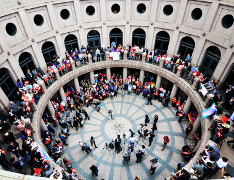
Figure 11.8 Texans protest the “transgender bathroom bill” outside the senate committee hearing on SB-6. Image credit: Stephanie License: CC-BY-2.0
A bill introduced to the Texas House of Representatives in March 2015 proposed that any student who encountered another student who does not identify with their “biological sex” in a shared restroom could be awarded $2,000 in damage reparations for “mental anguish.” The school itself would also be liable for failing to take action against known transgender students using their gender identified restroom.
Another bill introduced to the Texas House in February 2015 suggested that anyone over the age of 13 years found to be in a public restroom of a gender not their own should be charged with a Class A misdemeanor, spend up to a year in jail, and face a $4000 fine. Under this proposed bill, building managers who repeatedly and knowingly allow transgender individuals to use the facility of their gender identity would also face a fine of up to $10,000.
Although several bills were filed in both the regular legislative session and first special session of the Texas Legislature in 2017, in August 2017, the Texas Legislature adjourned without voting on the “transgender bathroom bill.” Sponsored by State Sen. Lois Kolkhorst and championed by Lt. Governor Dan Patrick, the Texas Senate passed SB6 in the regular session and SB3 in the Special Session by a vote of 21-10 largely along party lines (Senator Eddie Lucio Jr. was the only Democrat to vote in favor of each bill). Neither bill went to the House floor for a vote (although SB6 received a hearing by the House’s State Affairs committee). SB6 would have limited bathroom access based on the sex listed on one’s birth certificate while SB3 would have allowed an individual to use the restroom listed on several state IDs as well (e.g. driver’s license or concealed carry license).
Budget and Finances
In Texas, as in other states, lawmakers and public officials are elected in part to manage the state’s finances. This includes generating revenues (money coming into the state from various sources) and approving expenditures (the money spent on governmental functions and servicing state debt). State budgets are complex and fluid, as they depend on anticipated revenues and planned expenditures, which may alter over the course of a fiscal year. If revenues do not keep pace with expenditures, states generally have to raise taxes, cut services, borrow money, or a combination of the three. State budget decisions are also influenced by policy decisions at the national level, such as the Affordable Care Act or energy and environmental regulations, and issues at the local level, such as crime and the quality of education.
Taxes
Tax policy vary from state to state. Texas, like other states, levies taxes to help fund the variety of services provided by state government. Tax collections comprise approximately 40 percent of the states’ total revenues. The rest comes from non-tax sources, such as intergovernmental aid (e.g., federal funds), lottery revenues, and fees. The primary types of taxes levied by state governments include personal income tax, general sales tax, excise (or special sales) taxes and corporate income tax.
Texas generates the bulk of its tax revenue by levying a general sales tax and select sales taxes (otherwise known as excise taxes). Property taxes keep local governments like cities, counties and school districts operating and pay for everything from police officers’ salaries to classroom textbooks. The state derives its constitutional authority to tax from Article 8 of the state constitution.
Budget and Revenue
Taxation
Any government relies on a variety of taxes in order to make revenue to spend on public services.There are different types of taxes:
- Income tax– taxes collected from an individual’s income (There is no state income tax in Texas);
- General sales tax – based on taxes collected from retail prices of items;
- Excise taxes– taxes collected on specific products such as tobacco and gasoline;
- Ad valorem tax– taxes based according to the value of the property.
The federal government’s number one tax source for revenue is income tax- The 16th Amendment of the United States Constitution authorized an income tax. The state of Texas’ main revenue source are from sales tax. Article 8 of the Texas Constitution describes the “Taxation and Revenue” specifics. Local governments heavily rely on property taxes as their main source of tax revenue. (Note: https://www.comptroller.texas.gov/)
Other Revenue Sources
There are also no tax revenue sources that the state of Texas receives from various sources such as:
- Federal grants in aid– these types of funds come from the federal government to aid state or local governments, and sometimes require matching monies from the receiving government and/or are to be used for a specific use.
- Borrowing– The Texas Constitution does allow for the state or local governments to borrow funds through bonds. There are two types of bonds:
- General-obligation bonds: Bonds repaid from taxes, usually approved by taxpayers through vote;
- Revenue bonds: Typically paid through the revenue made from the projects created by the bond i.e. sports facilities, public college dorms. (Note: https://www.comptroller.texas.gov/)
- Economic Stablization Fund: The “Rainy Day Fund” is a type of savings account for the state of Texas. Since 1990, any surplus from previous budget cycles, and collections from oil and gas production are deposited in to this account- the Texas Constitution limits the balance of the Rainy Day Fund to no more than 10% of the general revenue deposited during the preceding budget cycle. At the end of fiscal year 2016, Texas’ Rainy Day Fund was approximately $9.7 billion dollars. The Texas Constitution authorizes the Legislature to utilize monies from the Rainy Day Fund for a budget deficit, projected revenue shortfall, or any other purpose they choose.
- “Appropriations for the first two circumstances require approval by three-fifths of the Legislature, while a general-purpose appropriation needs a two-thirds majority for passage. The Legislature has made seven appropriations totaling $10.6 billion from the ESF since its inception, most recently in 2013. All were approved by two-thirds votes. The purposes for these appropriations have included water projects, disaster relief, public education, economic development and health and human services. Only one appropriation—$3.2 billion in 2011, representing 34 percent of the fund balance at that time—was made to cover a budget gap (for fiscal 2011).” (Note: https://www.comptroller.texas.gov/economy/fiscal-notes/2016/september/rainy-day.php)
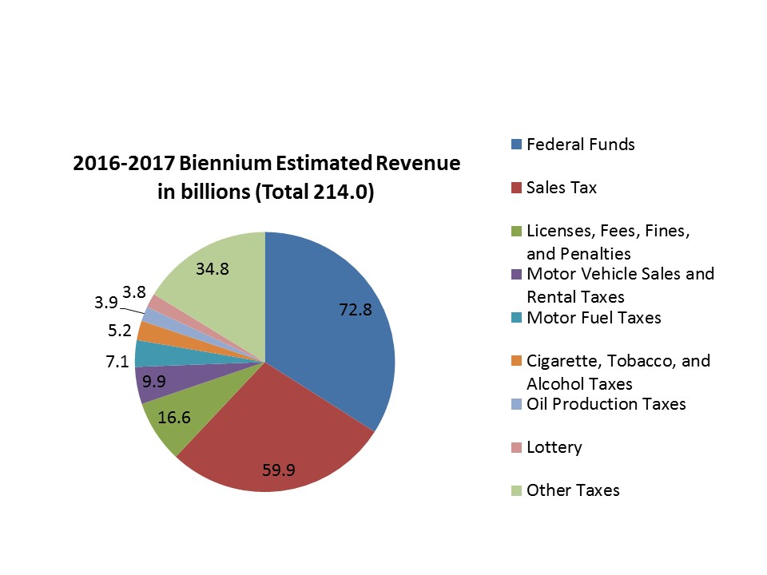
Figure 11.12 The estimated total state revenue for the 2016-2017 biennium is $214 billion dollars. The percentage breakdown for certain line items is: 34% will come from federal funds; 28% will be derived from sales taxes; 8% from licenses, fees, fines and penalties; 2.4% from cigarette, tobacco, and alcohol taxes; and 1.8% from the lottery.
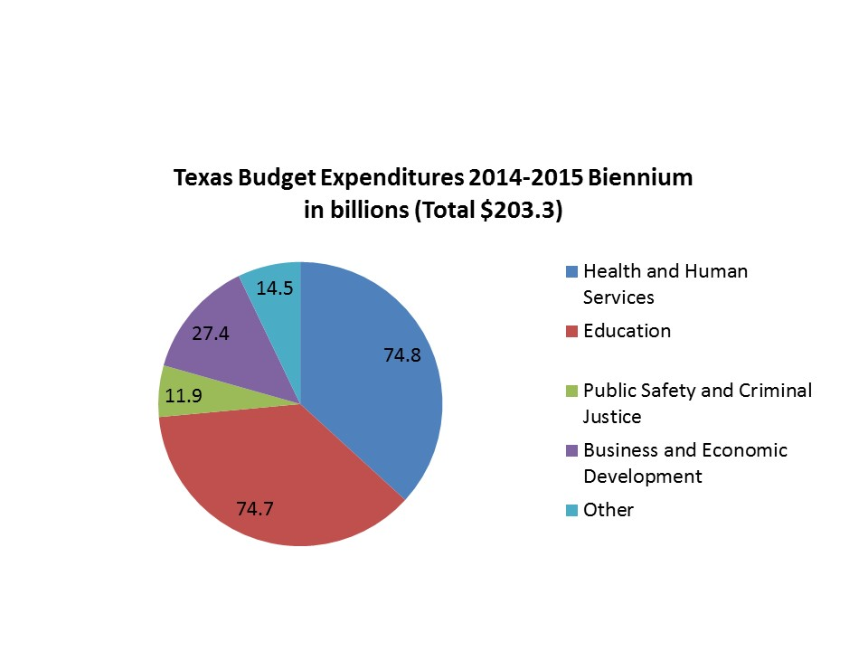
Figure 11.13 The state of Texas spends over half of their budget on Health and Human Services & Education. 36.8% of the state’s budget is spent on Health and Human Services, and 36.7 was spent on Education. Health and Human Services includes Temporary Assistance to Needy Families (TANF), Medicaid, Children’s Health Insurance Program (CHIP), and the Department of Aging and Disability Services. Education is split in to two categories: Public education, and Higher education. http://www.lbb.state.tx.us/Documents/Publications/Fiscal_SizeUp/Fiscal_SizeUp.pdf
Education Policy
One of the most important functions of state government is providing and funding public education. Texas has a very large and complex public school system, with an equally complex school finance system.
Three issues have played a major role in shaping education in Texas over the past fifty years: desegregation, funding equity, and finding the formula for educational excellence.
K-12 Public Education
The Texas public school system (prekindergarten through grade 12) operates within districts governed by locally elected school boards and superintendents.
In 2018, $52.3 billion in state and local money went to 5.4 million students in 1,019 traditional school districts and 171 charter districts.
The state of Texas guarantees every school district a certain amount of funding for each student, called the basic allotment. State lawmakers determine the base number per student, which was $5,140 in 2018. Many educators argue that the state should regularly increase that base number to match the increase in inflation to provide schools with the funding they need; however, the basic allotment per student has not changed substantially since 2010.
Higher Education
Texas’ higher education system is composed of 268 colleges and universities. Of these, 107 are public institutions, 73 are nonprofit private schools, and 88 are for-profit private institutions.
Other highlights:
- At public four-year colleges in Texas, 27.6 percent graduated within four years, while 51.7 percent graduated within six-years
- Hispanic students comprised approximately 34.0 percent of the total postsecondary student population in Texas
- Texas was one of five states in which the number of teaching and research assistants alone outnumbered full-time faculty.
School Choice
School choice programs provide alternatives to parents who do not wish to send their children to the local public schools to which they are assigned. Public school choice options include open enrollment policies, magnet schools, and charter schools. In addition, governments may provide financial assistance to parents who pursue private school options. This assistance may take the form of school vouchers, which allow public school students to attend private schools; scholarship tax credits; personal tax credits and deductions; and education savings accounts (ESAs), which allow parents to receive public funds directly for educational expenses. Proponents argue that school choice programs improve educational outcomes by expanding opportunity and access for historically disadvantaged students. In addition, advocates claim that school choice programs empower parents and improve traditional public schools through competition. Critics contend that these programs divert funds from traditional public schools, thereby generating unequal outcomes for students. In addition, some critics argue that school voucher programs wrongly direct tax dollars to religious organizations, which operate many private schools.
Other information policymakers use:
- In Texas, there were 312,640 students enrolled in 1,740 private schools in fall 2013, accounting for roughly 6.13 percent of the state’s total school-age population.
- According to the Friedman Foundation for Educational Choice, as of June 2016, Texas provided no financial assistance (either in the form of vouchers or tax credits) to parents wishing to send their children to private schools instead of public schools.
Charter Schools
Charter schools in Texas are public schools operated independently of public school systems, either by nonprofit or for-profit organizations. Although they are largely publicly funded, charter schools are exempt from many of the requirements imposed by state and local boards of education regarding hiring and curriculum.
As public schools, charter schools cannot charge tuition or impose special entrance requirements; students are usually admitted through a lottery process if demand exceeds the number of spaces available in a school. Charter schools generally receive a percentage of the per-pupil funds from the state and local school districts for operational costs based on enrollment. In most states, charter schools do not receive funds for facilities or start-up costs; therefore, they must rely to some extent on private donations. The federal government also provides revenues through special grants.
Other information policymakers use:
- According to the National Alliance for Public Charter Schools, a charter school advocacy group, there were an estimated 723 total charter schools in Texas in the 2015-2016 school year. These schools enrolled approximately 282,900 students.
- Overall, charter school students accounted for 5.39 percent of total public school enrollment in Texas in 2015.
- The Texas State Legislature approved the state’s charter school law in 1995.
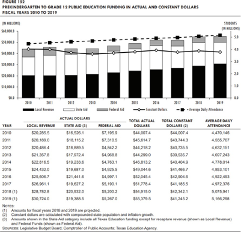
Figure 11.9 This table illustrates the change in public education revenue since fiscal year 2010 in current and constant dollars, using compounded state population and inflation growth, and the number of students in average daily attendance (ADA). Image credit: FISCAL SIZE-UP 2018–19 BIENNIUM Report ) page 205
Election Policy
Ballot Access Requirements
In order to get on the ballot in Texas, a candidate for state or federal office must meet a variety of state- specific filing requirements and deadlines. These regulations, known as ballot access laws, determine whether a candidate or party will appear on an election ballot. These laws are set at the state level. A candidate must prepare to meet ballot access requirements well in advance of primaries, caucuses, and the general election.
There are three basic methods by which an individual may become a candidate for office in a state.
- An individual can seek the nomination of a state-recognized political party.
- An individual can run as an independent. Independent candidates often must petition in order to have their names printed on the general election ballot.
- An individual can run as a write-in candidate.
Redistricting
Redistricting is the process by which new congressional and state legislative district boundaries are drawn. Each of Texas’ 36 United States Representatives and 181 state legislators are elected from political divisions called districts. United States Senators are not elected by districts, but by the states at large. District lines are redrawn every 10 years following completion of the United States census. The federal government stipulates that districts must have nearly equal populations and must not discriminate on the basis of race or ethnicity.
Other information policymakers may use:
- Following the 2010 United States Census, Texas was apportioned 36 congressional seats. Texas’ House of Representatives is made up of 150 districts; Texas’ State Senate is made up of 31 districts.
- In Texas, congressional and state legislative district boundaries are drawn by the state legislature. If the legislature fails to approve a state legislative redistricting plan, a backup commission must draw the lines.
- Texas’ congressional and state legislative district maps that were drawn after the 2010 census have been subject to litigation (https://ballotpedia.org/Redistricting_in_Texas#Redistricting_after_the_2010_census). On June 25, 2018, the Supreme Court of the United States reversed a district court decision striking down several congressional and state legislative district maps as unconstitutional racial gerrymanders (the high court upheld the district court’s finding of racial gerrymandering with respect to one state House district).
Energy Policy
Energy policy involves governmental actions affecting the production, distribution, and consumption of energy in a state. Energy policies are enacted and enforced at the local, state, and federal levels and may change over time. These policies include legislation, regulation, taxes, incentives for energy production or use, standards for energy efficiency, and more. Stakeholders include citizens, politicians, environmental groups, industry groups, and think tanks. A variety of factors can affect the feasibility of federal and state-level energy policies, such as available natural resources, geography, and consumer needs.
Fracking
Hydraulic fracturing, also known as fracking, is a method of oil and natural gas extraction that involves injecting fluid into subterranean rock formations at high pressure. The Oil and Gas Division within the Texas Railroad Commission is responsible for regulating fracking in Texas.
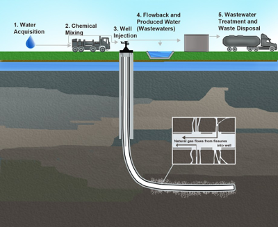
Figure 11.10 Illustration of hydraulic fracturing process and related activities. The process involves injecting fluid into subterranean rock formations at high pressure. The high-pressure fluid produces a fracture network that allows crude oil and natural gas inside dense rocks to flow into a wellbore and be extracted at the surface. The fluid (known as frac fluid) contains between 98 percent and 99.5 percent water and sand; between 0.5 percent and 2 percent of the fluid is composed of chemical additives, which are used to stop the growth of microorganisms, prevent well casing corrosion, increase the rate at which the fluid is injected, and reduce pressure, among other uses. Image credit: Environmental Protection Agency, Public Domain
Texas overlies portions of the Anadarko Basin, the Palo Duro Basin, the Permian Basin, the Barnett Shale, the Eagle Ford Shale, and the Haynesville-Bossier Shale. As of February 2017, Texas had 279,615 active oil and gas wells. As of May 2017, however, the state did not track the number of wells that were hydraulically fractured. According to the Texas Railroad Commission, fracking began in Texas in the 1950s.
While states have primary regulatory authority over fracking, oil and gas operators must meet requirements in the following federal environmental and public health laws, among others:
- The Clean Air Act (https://www.epa.gov/clean-air-act-overview), which regulates air pollutants emitted during oil and gas production
- The Clean Water Act (https://www.epa.gov/laws-regulations/summary-clean-water-act), which regulates all pollution discharges into surface waters and requires oil and gas operators to obtain permits to discharge produced water—fluids used during fracking as well as water that occurs naturally in oil or gas-bearing formations—into surface water.
- The Comprehensive Environmental Response, Compensation and Liability Act (CERCLA), (https://www.epa.gov/laws-regulations/summary-comprehensive-environmental-response- compensation-and-liability-act)which requires oil and gas operators to report the release of hazardous substances during oil and operations and allows the EPA to investigate hazardous substance releases and require operators to restore areas affected by hazardous spills.
As of March 2017, Texas regulations required fracking operators to complete and submit a list of chemicals used during the fracking process on the website FracFocus.org. Operators that consider a chemical or the concentration of a chemical to be a trade secret are allowed to withhold these chemicals from public disclosure and thus disclosure to potential competitors.
Environmental Policy
Environmental policy aims to conserve natural resources by balancing environmental protection with economic growth, property rights, public health, and energy production. This is done mainly through laws and regulation passed at all governmental levels and influenced by many stakeholders with different agendas.
Endangered Species
Endangered species policy in Texas involves the identification and protection of endangered and threatened animal and plant species. Policies are implemented and enforced by both the state and federal governments.
Finance Policy
The United States financial system is a network that facilitates exchanges between lenders and borrowers. The system, which includes banks and investment firms, is the base for all economic activity in the nation. According to the Federal Reserve, financial regulation has two main intended purposes: to ensure the safety and soundness of the financial system and to provide and enforce rules that aim to protect consumers. The regulatory framework varies across industries, with different regulations applying to different financial services. Individual federal and state entities have different and sometimes overlapping responsibilities within the regulatory system. For example, individual states and three federal agencies—the Federal Reserve, the Office of Comptroller of the Currency (OCC), and the Federal Deposit Insurance Corporation (FDIC)— regulate commercial banks. Other sectors of the financial market are regulated by specific entities. The Department of Banking is the primary regulatory body for financial institutions in Texas. Some, such as the Brookings Institution, argue that expanded governmental regulation of banks and financial products (e.g., mortgages) can prevent large- scale financial crises, protect consumers from abusive practices, and stabilize financial markets. Others, such as the Cato Institute, argue that over-regulation of banks of banks and financial products burdens business, stalls economic growth, and does little, if anything, to stabilize financial markets. Beyond this basic debate about the role of the government in regulating the private financial sector, there are varying opinions about the proper extent of governmental regulation.
Healthcare Policy
Healthcare policy in Texas involves the creation and implementation of laws, rules, and regulations for managing the state’s healthcare system. The healthcare system consists of services provided by medical professionals to diagnose, treat, and prevent mental and physical illness and injury. The system also encompasses a wide range of related sectors, such as insurance, pharmaceuticals and health information technology.
Healthcare policy affects not only the cost citizens must pay for care, but also their access to care and the quality of care received, which can influence their overall health. A top concern for policymakers is the rising cost of healthcare, which has placed an increasing strain on the disposable income of consumers as well as on state budgets.
Other issues in healthcare policy include
- state Medicaid expansion,
- health information technology and privacy,
- uninsured and underinsured portions of the population, a shortage of primary care physicians, and
- mental healthcare access and coverage.
One long-term policy issue has been how to provide for the basic needs of poor people in Texas. Social welfare policy is designed to ensure some level of equity in a democratic political system based on competitive, free-market economics. During the Great Depression, many politicians came to fear that the high unemployment and low-income levels plaguing society could threaten the stability of democracy, as was happening in European countries like Germany and Italy. The assumption in this thinking is that democratic systems work best when poverty is minimized.
Social welfare policy creates an automatic stimulus for society by building a safety net that can catch members of society who are suffering economic hardship through no fault of their own. For an individual family, this safety net makes the difference between eating and starving; for an entire economy, it could prevent an economic recession from sliding into a broader and more damaging depression.
Poverty is a complicated policy issue in Texas. There are more than 200 programs administered by the Texas Health and Human Services Commission (HHS) that are aimed at different problems related to poverty.
As part of a broader social welfare policy in Texas, Medicare and Medicaid were intended to ensure that vulnerable populations have access to health care. Medicare is an entitlement program funded through payroll taxes. Its purpose is to make sure that senior citizens and retirees have access to low-cost health care they might not otherwise have, because most U.S. citizens get their health insurance through their employers.
Medicare provides three major forms of coverage: a guaranteed insurance benefit that helps cover major hospitalization, fee-based supplemental coverage that retirees can use to lower costs for doctor visits and other health expenses, and a prescription drug benefit. Medicare faces the problem that health care costs are rising significantly faster than inflation.
Medicaid Spending
Medicaid is a formula-based health insurance program, which means beneficiaries must demonstrate they fall within a particular income category. Individuals in the Medicaid program receive a fairly comprehensive set of health benefits, although access to health care may be limited because fewer providers accept payments from the program (it pays them less for services than does Medicare).
Medicaid differs dramatically from Medicare in that it is partially funded by states, many of which have reduced access to the program by setting the income threshold so low that few people qualify. The ACA (2010) sought to change that by providing more federal money to the states if they agreed to raise minimum income requirements. Many states have refused, which has helped to keep the overall costs of Medicaid lower, even though it has also left many people without health coverage they might receive if they lived elsewhere.
Texas’ Medicaid program provides medical insurance to groups of low-income people and individuals with disabilities. Medicaid is a nationwide program jointly funded by the federal government and the states. Medicaid eligibility, benefits, and administration are managed by the states within federal guidelines. A program related to Medicaid is the Children’s Health Insurance Program (CHIP), which covers low-income children above the poverty line and is administered like Medicaid through the Centers for Medicare and Medicaid Services in the U.S. Department of Health and Human Services.
TexCare offers additional children’s health insurance programs through Medicaid, which is provided at no cost to qualifying children, and the State Kids Insurance Program (SKIP). State employees may qualify for an insurance supplement for dependent children under age 19. SKIP supplements are covered through the Texas state insurance program.
Effect of the Affordable Care Act
The impact of the Affordable Care Act of 2010 (ACA), also known as Obamacare, has been debated among politicians, policymakers, and other stakeholders. The ACA was signed into law in 2010 by President Barack Obama (D). The law facilitates the purchase of health insurance through a system of health insurance exchanges, tax credits, and subsidies. Initially, states were required to expand eligibility for Medicaid under the law; a 2012 ruling by the United States Supreme Court made the Medicaid expansion voluntary for states. The law also requires insurers to cover healthcare services within a standard set of benefits and prohibits coverage denials based on preexisting conditions. Under the law, all individuals are required to obtain health insurance.
Immigration Policy
Immigration policy determines who may become a new citizen of the United States or enter the country as a temporary worker, student, refugee, or permanent resident. The federal government is responsible for setting and enforcing most immigration policy. Meanwhile, states assume a largely supportive role, enacting their own supplementary laws and setting policies that may, for example, determine which public services immigrants can access, establish employee screening requirements, or guide the interaction between related state agencies and their federal counterparts.
Many groups seek to determine the economic costs and benefits that immigration brings to states and the United States as a whole. Some groups estimate that immigrants are a net gain to the economy because of the goods and services they provide while others claim that immigrants impose a net burden to the state by using healthcare, education, or welfare services.
Some jurisdictions, including some states, cities, and counties, have adopted policies of not cooperating with federal immigration enforcement; these jurisdictions have become known as sanctuary jurisdictions.
References and Further Reading
Regents of the University of California v. Bakke. (n.d.). Oyez. Retrieved October 23, 2019,
Harris, D. N. (2009). Affirmative Action: Race or Class? Miller Center of Public Affairs.
Strasser, Mr. Ryan (2008-07-01). “Second Amendment.” LII / Legal Information Institute.
Igielnik, R. & Brown, A. (2017). Key Takeaways on Americans’ Views of Guns and Gun Ownership. Pew Research Center. Retrieved October 22, 2019.
KERA (2019, September 1). 8 New Gun Laws Take Effect in Texas Sept. 1. Retrieved October 22, 2019.
Mellig, L. (2018, March 26). The ACLU’s Position on Gun Control. American Civil Liberties Union.
Texas Legislature (2015). H.B. No. 280. Retrieved October 22, 2019.
Kellaway, M. (2015). “Texas Bill Would Jail Those Whose Chromosomes Don’t Match the Restroom They’re Using.” Advocate.
Texas Legislature (2015). H.B. 1748. Retrieved October 23, 2019.
McGaughy, L. (2017, March 15). Bathroom of ‘biological sex’ bill passes Texas Senate. Dallas Morning News.
Ura, A. (2017, July 25). Texas Senate Votes Again To Advance ‘Bathroom Bill. The Texas Tribune.
Brunori, D. (2011). State Tax Policy: A Political Perspective. Washington, D.C.: The Urban Institute Press. Retrieved October 22, 2019.
Texas Constitution and Statutes, Texas Constitution: Article VIII Taxation and Revenue. Retrieved October 22, 2019.
Swaby, A. (2019). Texas School Finance System is Unpopular and complex. Here’s How it Works. Texas Tribune. Retrieved October 23, 2019.
National Center for Education Statistics (2016). College Navigator - Texas.
Friedman Foundation for School Choice (n.d.). What is School Choice?
Professor Justin Levitt’s Guide to Drawing the Electoral Lines (2019). All About Redistricting: Why Does it Matter? Retrieved October 23, 2019.
Schwartz, J. (2011, June 29). Cracked, stacked and packed: Initial redistricting maps met with skepticism and dismay. Indy Week.
Hill, S. (2013, June 17). How the Voting Rights Act Hurts Democrats and Minorities. The Atlantic.
Texas Commission on Environmental Quality (2019, June 27). Barnett Shale Maps and Charts. Retrieved October 23, 2019.
Texas Railroad Commission (2017). Oil Well Counts by County. Retrieved October 23, 2019.
Texas Railroad Commission (2017). Gas Well Counts by County. Retrieved October 23, 2019.
Texas Railroad Commission (2018). Hydraulic Fracturing. Retrieved October 23, 2019.
Chemical and Engineering News, “Tracking Fracking.” Retrieved October 23, 2019.
The National Bureau of Economic Research (2011). A Brief History of Regulations Regarding Financial Markets in the United States: 1789 to 2009. Retrieved October 23, 2019.
Federal Deposit Insurance Corporation (2011). The U.S. Federal Financial Regulatory System: Restructuring Federal Bank Regulation Retrieved October 23, 2019.
Baily, M. N., Johnson, M. S. & Litan, R. E. (2008, November 24). The Origins of the Financial Crisis (https://www.brookings.edu/research/the-origins-of-the-financial- crisis/). Brookings. Retrieved October 23, 2019.
The Cato Institute (2009, July 31). Did Deregulation Cause the Financial Crisis? Retrieved October 23, 2019.
Benefits.gov (2019). TexCare Children’s Health Insurance Program (CHIP). Retrieved October 23, 2019.
Licensing and Attribution
CC LICENSED CONTENT, ORIGINAL
Public Policy in Texas. Authored by: Ballotpedia. License: GNU Free Documentation License
Bathroom Bill: Texas. Authored by: Wikipedia. License: CC BY-SA
Bathroom Bill: Texas. Authored by: Wikipedia. License: CC BY-SA
CC LICENSED CONTENT, ADAPTATION
The Right to Bear Arms. Adapted from Gun Politics in the United States and Campus Carry in the United States. Authored by: Wikipedia. License: CC BY-SA
Fracking. Adapted from Fracking in Texas. Authored by Ballotpedia. License: GNU Free Documentation License
Influencing Policy Decisions in Texas
Learning Objective
By the end of this section, you will be able to:
- Outline the actions an individual can take to impact policy decisions in Texas
Introduction: Policymakers
Many Americans were concerned when Congress began debating the ACA. As the program took shape, some people felt the changes it proposed were being debated too hastily, would be implemented too quickly, or would summarily give the government control over an important piece of the U.S. economy—the health care industry.
Ironically, the government had been heavily engaged in providing health care for decades. More than 50 percent of all health care dollars spent were being spent by the U.S. government well before the ACA was enacted. As you have already learned, Medicare was created decades earlier. Despite protesters’ resistance to government involvement in health care, there is no keeping government out of Medicare; the government IS Medicare. For Texans, this explains why there are so many problems with the program.
What many did not realize is that few if any of the proposals that eventually became part of the ACA were original. While the country was worried about problems like terrorism, the economy, and conflicts over gay rights, armies of individuals were debating the best ways to fix the nation’s health care delivery. Two important but overlapping groups defended their preferred policy changes: policy advocates and policy analysts.
Policy Advocates
Take a minute to think of a policy change you believe would improve some condition in the Texas. Now ask yourself this: “Why do I want to change this policy?” Are you motivated by a desire for justice? Do you feel the policy change would improve your life or that of members of your community? Is your sense of morality motivating you to change the status quo? Would your profession be helped? Do you feel that changing the policy might raise your status?
Most people have some policy position or issue they would like to see altered. One of the reasons the news media are so enduring is that citizens have a range of opinions on public policy, and they are very interested in debating how a given change would improve their lives or the country’s. But despite their interests, most people do little more than vote or occasionally contribute to a political campaign. A few people, however, become policy advocates by actively working to propose or maintain public policy.
One way to think about policy advocates is to recognize that they hold a normative position on an issue, that is, they have a conviction about what should or ought to be done. The best public policy, in their view, is one that accomplishes a specific goal or outcome. For this reason, advocates often begin with an objective and then try to shape or create proposals that help them accomplish that goal. Facts, evidence, and analysis are important tools for convincing policymakers or the general public of the benefits of their proposals. Private citizens often find themselves in advocacy positions, particularly if they are required to take on leadership roles in their private lives or in their organizations. The most effective advocates are usually hired professionals who form lobbying groups or think tanks to promote their agenda.
A lobbying group that frequently takes on advocacy roles is AARP (formerly the American Association of Retired Persons). AARP’s primary job is to convince the government to provide more public resources and services to senior citizens, often through regulatory or redistributive politics. Chief among its goals are lower health care costs and the safety of Social Security pension payments.
These aims put AARP in the Democratic Party’s electoral coalition, since Democrats have historically been stronger advocates for Medicare’s creation and expansion. In 2002, for instance, Democrats and Republicans were debating a major change to Medicare. The Democratic Party supported expanding Medicare to include free or low-cost prescription drugs, while the Republicans preferred a plan that would require seniors to purchase drug insurance through a private insurer. The government would subsidize costs, but many seniors would still have substantial out-of-pocket expenses. To the surprise of many, AARP supported the Republican proposal.
While Democrats argued that their position would have provided a better deal for individuals, AARP reasoned that the Republican plan had a much better chance of passing. The Republicans controlled the House and looked likely to reclaim control of the Senate in the upcoming election. Then-president George W. Bush was a Republican and would almost certainly have vetoed the Democratic approach. AARP’s support for the legislation helped shore up support for Republicans in the 2002 midterm election and also help convince a number of moderate Democrats to support the bill (with some changes), which passed despite apparent public disapproval. AARP had done its job as an advocate for seniors by creating a new benefit it hoped could later be expanded, rather than fighting for an extreme position that would have left it with nothing.
Not all policy advocates are as willing to compromise their positions. It is much easier for a group like AARP to compromise over the amount of money seniors will receive, for instance, than it is for an evangelical religious group to compromise over issues like abortion, or for civil rights groups to accept something less than equality. Nor are women’s rights groups likely to accept pay inequality as it currently exists. It is easier to compromise over financial issues than over our individual views of morality or social justice.
Policy Analysts
A second approach to creating public policy is a bit more objective. Rather than starting with what ought to happen and seeking ways to make it so, policy analysts try to identify all the possible choices available to a decision maker and then gauge their impacts if implemented. The goal of the analyst isn’t really to encourage the implementation of any of the options; rather, it is to make sure decision makers are fully informed about the implications of the decisions they do make.
Understanding the financial and other costs and benefits of policy choices requires analysts to make strategic guesses about how the public and governmental actors will respond. For example, when policymakers are considering changes to health care policy, one very important question is how many people will participate. If very few people had chosen to take advantage of the new health care plans available under the ACA marketplace, it would have been significantly cheaper than advocates proposed, but it also would have failed to accomplish the key goal of increasing the number of insured. But if people who currently have insurance had dropped it to take advantage of ACA’s subsidies, the program’s costs would have skyrocketed with very little real benefit to public health. Similarly, had all states chosen to create their own marketplaces, the cost and complexity of ACA’s implementation would have been greatly reduced.
Because advocates have an incentive to understate costs and overstate benefits, policy analysis tends to be a highly politicized aspect of government. It is critical for policymakers and voters that policy analysts provide the most accurate analysis possible. A number of independent or semi-independent think tanks have sprung up in Washington, DC, to provide assessments of policy options. Most businesses or trade organizations also employ their own policy- analysis wings to help them understand proposed changes or even offer some of their own. Some of these try to be as impartial as possible. Most, however, have a known bias toward policy advocacy. The Cato Institute, for example, is well known and highly respected policy analysis group that both liberal and conservative politicians have turned to when considering policy options. But the Cato Institute has a known libertarian bias; most of the problems it selects for analysis have the potential for private sector solutions. This means its analysts tend to include the rosiest assumptions of economic growth when considering tax cuts and to overestimate the costs of public sector proposals.
Get Connected!
Preparing to Be a Policymaker
What is your passion? Is there an aspect of society you think should be changed? Become a public policy advocate for it! One way to begin is by petitioning the Office of the President. In years past, citizens wrote letters to express grievances or policy preferences. Today, you can visit We the People, the White House online petitions platform. At this government site, you can search for petitions related to your cause or post your own. If your petition gets enough signatures, the White House will issue a response. The petitions range from serious to silly, but the process is an important way to speak out about the policies that are important to you.
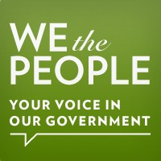
Figure 11.11 The White House petition website encourages citizens to participate in the democratic process. Image credit: SarnZero License: CC- BY-3.0
References and Further Reading
Thomas R. Oliver, T. R., Lee, P. R., & Lipton, H. L. (2004). A Political History of Medicare and Prescription Drug Coverage. Milbank Quarterly 82, No. 2: 283–354.
Licensing and Attribution
CC LICENSED CONTENT, SHARED PREVIOUSLY
Policymakers. Adapted from American Government 2e. Authored by: OpenStax. Located at: https://cnx.org/contents/nY32AU8S@5.1:xJJkKaSK@5/Preface. License: CC BY: Attribution. License Terms: Download for free at http://cnx.org/contents/9d8df601-4f12-4ac1- 8224-b450bf739e5f@5.1
Glossary
distributive policy: a policy that collects payments or resources broadly but concentrates direct benefits on relatively few
domestic policy: policies focused on the citizens of the U.S. and their well being
entitlement: a program that guarantees benefits to members of a specific group or segment of the population
Gilmer-Aikin Laws: education reform legislation passed in 1949 that supplemented local funding of education with public monies, raised teachers’ salaries, mandated a minimum length for the school year, and provided for more state supervision of public education
gun control: the set of laws or policies that regulate the manufacture, sale, transfer, possession, modification, or use of firearms by civilians
gun rights: “the right to bear arms” is a person’s right to possess weapons for their own defense
HCERA: The Health Care and Education Reconciliation Act of 2010 combines revised portions of the Patient Protection and Affordable Care Act with the Student Aid and Fiscal Responsibility Act (SAFRA), which amends the Higher Education Act of 1965 (HEA). The HCERA was signed into law by President Barack Obama on March 30, 2010 at Northern Virginia Community College.
libertarians: people who believe that government almost always operates less efficiently than the private sector and that its actions should be kept to a minimum
Medicaid: a federal and state program financing medical services for low-income citizens
Medicare: an entitlement health insurance program for older people and retirees who no longer get health insurance through their work
New Deal: President Franklin D. Roosevelt’s 1930s programs to stimulate the national economy and provide relief to victims of the Great Depression
policy analysts: people who identify all possible choices available to a decision-maker and assess the potential impact of each
policy advocates: people who actively work to propose or maintain public policy
public policy: the broad strategy government uses to do its job; the relatively stable set of purposive governmental behaviors that address matters of concern to some part of society
public policy approach: a comprehensive method for studying the process through which issues come to the attention of government decision-makers, and through which policies are formulated, adopted, implemented and evaluated.
redistributive policy: a policy in which costs are born by a relatively small number of groups or individuals, but benefits are expected to be enjoyed by a different group in society
regulatory policy: a policy that regulates companies and organizations in a way that protects the public
safety net: a way to provide for members of society experiencing economic hardship
Social Security: a social welfare policy for people who no longer receive an income from employment
Licenses and Attributions
CC LICENSED CONTENT, ORIGINAL
Public Policy in Texas: Glossary. Authored by: panOpen. License: CC BY: Attribution
Assessment
Check your knowledge of this chapter by taking the optional, ungraded quiz linked below.